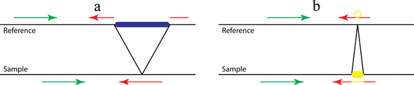
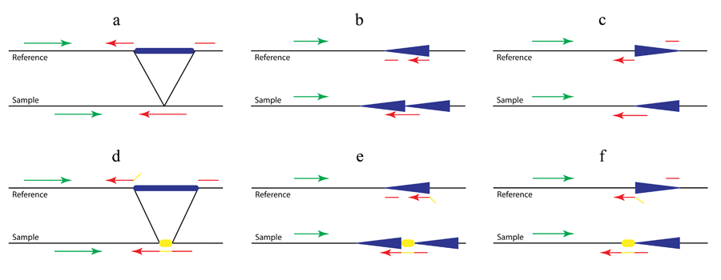

Background
This page provides some background information on the way Pindel works.

Figure 1. A pattern growth approach, as implemented in Pindel, to detect simple deletions (a) and insertions (b) at nucleotide-resolution. In the preprocessing step, all reads are mapped to the reference genome. Then the mapping results are examined to select those paired reads that mapped with indels or only one end can be mapped. Our Pindel program uses the mapped read to determine the anchor point on the reference genome and the direction of unmapped read (or mapped with indels). Knowing the anchor point, the direction to search for the unmapped read and the user defined Maximum Deletion Size, a sub-region in the reference genome can be located, where Pindel will break the unmapped reads into 2 (deletion) or 3 (short insertion) fragments and map the two terminal fragments separately.
Detecting large deletions
When we map paired-end reads to the reference genome, for the majority of the reads, both ends can be mapped to the reference genome. However, a small portion of them might have only one end mapped to the reference genome. One of the possibilities is that the unmapped read mate spans the break point of a large deletion event in the test sample compared to the reference genome as shown in Figure 1a. Thus, those unmapped reads actually carry the information about the precise break points of the deletion event. If we can find a proper position to split the read into two fragments, which can be mapped back to the reference separately, we will be able to compute the exact positions of the break points and also the fragment deleted compared to the reference. If we collect multiple reads that support the same incidence, we will be more confident about the deletion event in the test sample.
Detecting medium sized insertions
In the previous section, we explained how to compute the precise break points of deletion events. The deletion size can be rather large as long as we find unique matches for the two parts of the unmapped read. It is, however, difficult to infer the fragment for large insertions directly from the read sequence. In this case we aim to compute the precise break points and the fragment inserted in the medium sized range (up to 16 bases for 36 bp reads or for longer reads: ReadLength? - 20). The computational procedure is very similar to that used for searching deletions.
Simulation and real data
In order to evaluate Pindel, we have first simulated indels on human chromosome X and examined how well Pindel can detect those simulated indels in the presence of SNPs and sequencing errors. When we increased maximum deletion size from 10 bp to 100 kb, we were able to recover about 80% of deletions with a <2% false discovery rate. As for insertions, we can correctly detect around 80% of the insertions of 1–16 bases in the presence of SNPs and sequencing errors. For 36 bp paired-end reads, the probability for Pindel to detect insertion events longer than 16 bp is decreasing as the size of insertion events goes up. To test Pindel on real data, we analyzed the genome of a male Yoruba from Ibadan, Nigeria (YRI, sample NA18507). Pindel found 146,843 deletions (1bp-10kb) and 142,908 short insertions (1-16bp). 91.2% of 1-16bp deletions and 87.2% of 1-16bp insertions overlap with calls from Illumina.
New developments
 (click for full-size image)
{kind=link}
Figure 2. Detection of complex structural variants (a. large deletions; b. tandem duplications; c. inversions) with (d, e and f) or without (a, b and c) non-template sequence.
As shown in Figure 2b and 2c, in addition to the previously established Pindel method for the detection of deletions (Figure 1a and Figure 2a), we use the pattern growth and split-read approach to identify tandem duplications and inversions by carefully examining mapping locations, strands and directions of the two fragments of the unmapped end. For example, if one unmapped read is across the 5’ breakpoint of an inversion as shown in Figure 2c (red arrow in ‘sample’), the 3’ end of the unmapped read will be mapped to the reference normally related to the mapped read (green in ‘reference’) while the 5’ end will be aligned downstream of that and on the opposite strand (broken red arrow in ‘reference’). Thanks to the pattern growth and split-read algorithms we will be able to capture the non-template sequence (yellow in Fig 2d-f) inserted during double-strand break repair. Thus in Figure 2e the unmapped read (red and yellow in ‘sample’) will be split into three fragments, the yellow sequence being the inserted non-template sequence.